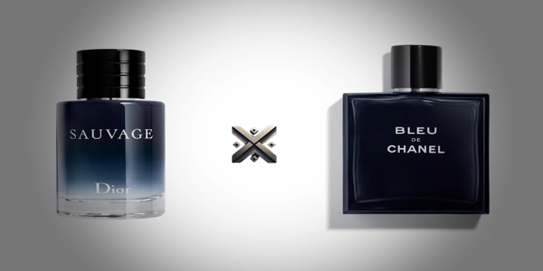

Comparando dois dos perfumes masculinos importados mais desejados do mundo: Dior Sauvage Eau de Toilette e Bleu de Chanel Eau de Parfum. Neste guia definitivo, você vai descobrir tudo sobre notas olfativas, fixação, projeção, diferenças entre as versões, preços atualizados, onde comprar com segurança no Brasil.
Ideal para quem está em dúvida entre essas duas fragrâncias de luxo, ou simplesmente quer entender por que elas são líderes de busca no Google e campeãs de vendas no mercado de perfumes masculinos.

O Dior Sauvage tem um cheiro fresco e intenso, com um início cítrico poderoso que evolui para uma base amadeirada envolvente. O Bleu de Chanel oferece uma fragrância refinada com equilíbrio entre frescor, especiarias e madeiras, ideal para homens sofisticados. Fixação: até 10 horas na pele Projeção: forte nas 3 primeiras horas, depois moderada Fixação: média de 6 a 8 horas Projeção: elegante e moderada, sem ser invasiva Ideal para ocasiões especiais, como reuniões sociais, celebrações, encontros e programas noturnos. Sua intensidade combina bem com climas amenos ou frios. Versátil para uso diário, reuniões de trabalho e ambientes formais. Sua composição se destaca em temperaturas elevadas e mantém presença ao longo do dia (ou da noite). Dior Sauvage: 30 ml, 60 ml, 100 ml, 200 ml e refil de 300 ml Bleu de Chanel está disponível em volumes de: 50 ml, 100 ml e 150 ml Ambos os perfumes são importados e estão disponíveis em diversas perfumarias especializadas, lojas de departamento e e-commerces confiáveis. É fundamental verificar se o vendedor é autorizado e se o produto é original, evitando falsificações. Fragrâncias renomadas como Dior Sauvage e o próprio Bleu de Chanel costumam ser bastante falsificadas, por isso é essencial optar por lojas confiáveis e bem avaliadas na hora da compra. Também vale a pena observar a política de trocas, o prazo de entrega e a disponibilidade de amostras ou testers para experimentar a fragrância antes de investir em frascos maiores. Adquirir o perfume por meio de revendedores confiáveis assegura que o produto chegue lacrado, bem embalado e com autenticidade garantida. A resposta depende do gosto pessoal, mas aqui está um resumo: Ambos são perfumes importados de alto padrão, com qualidade reconhecida internacionalmente e que agradam diferentes públicos. Sim, tanto o Dior Sauvage quanto o Bleu de Chanel são perfumes importados da França, símbolo de luxo e tradição em perfumaria. Eles são fabricados com matérias-primas premium, o que garante sofisticação, melhor fixação e projeção. Dior Sauvage é mais chamativo, ideal para quem quer ser notado. Bleu de Chanel aposta em uma sofisticação discreta, sendo perfeito para eventos formais e situações que pedem elegância. Já para quem busca uma fragrância de presença forte e que se destaca logo de cara, o Sauvage tende a atrair mais atenção e elogios, principalmente em encontros sociais e festas. Já o Bleu tende a atrair elogios mais discretos, porém sinceros, especialmente em ambientes corporativos e encontros mais íntimos. O tipo de elogio muda: com o Sauvage, é mais comum ouvir “que perfume forte e bom!”; com o Bleu, os comentários tendem a ser mais como “você está muito bem perfumado”. Ambos têm poder de agradar, cada um à sua maneira. Sauvage dura mais na maioria das peles. Se durabilidade é seu foco, vá de Sauvage. Mas o Bleu não fica muito atrás e ainda oferece elegância no processo. Ambos são ótimos presentes. Sauvage para perfis ousados e jovens. Bleu para perfis discretos e sofisticados. Ambos são excelentes escolhas, cada um com seus pontos fortes. Sauvage leva vantagem por oferecer frascos maiores e refil, o que reduz o custo por ml. Bleu de Chanel compensa pela exclusividade e refinamento. Para o uso diário, o Sauvage se destaca por oferecer maior volume com um custo-benefício mais acessível ao longo do tempo. Já quem procura uma fragrância mais exclusiva, ideal para momentos marcantes, encontrará no Bleu de Chanel uma composição mais elaborada e refinada — ainda que isso se reflita em um valor mais elevado por mililitro.
Além disso, a durabilidade do frasco depende do seu estilo de uso: se você aplica com frequência, o refil do Sauvage acaba se tornando uma opção mais econômica e sustentável.1. Notas Olfativas: Qual o Cheiro de Cada Um?
Dior Sauvage EDT
Bleu de Chanel EDT
2. Desempenho: Fixação e Projeção
Dior Sauvage EDT
Bleu de Chanel EDT
3. Quando Usar?
Dior Sauvage EDT
Bleu de Chanel EDT
4. Preço: Quanto Custa?
Dior Sauvage EDT
Bleu de Chanel EDT
5. Tamanhos Disponíveis: Até Quantos ml Tem?
6. Onde Comprar?
7. Qual o Melhor Perfume Masculino?
8. São Perfumes Importados?
9. Qual Atrai Mais Elogios?
10. Qual Dura Mais?
11. Qual o Melhor para Presentear?
12. Qual o Melhor Custo-Benefício?